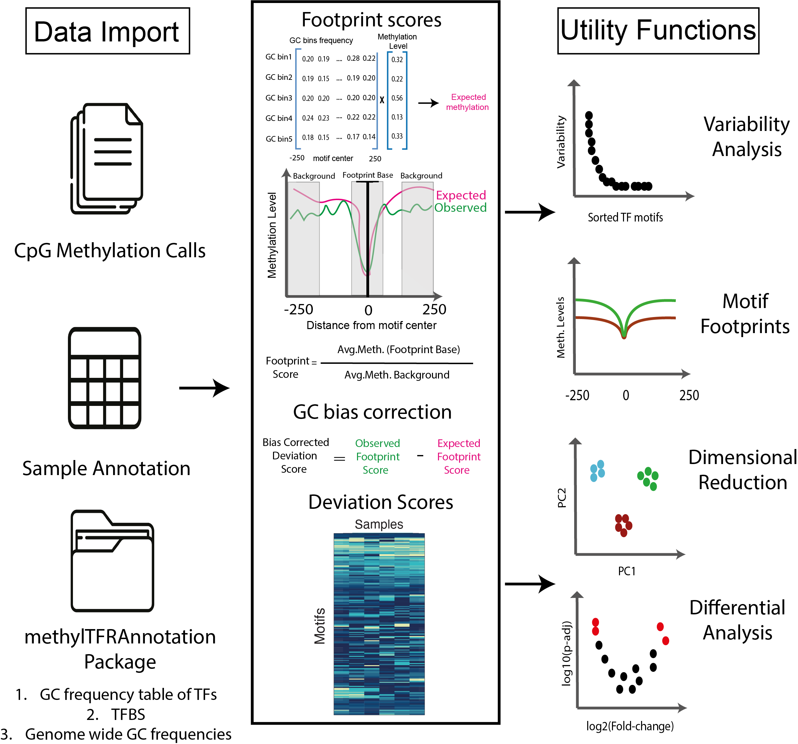

methylTFR: DNA Methylation Signatures in TFBS
Irem B. Gündüz, Sarath Kumar Murugan, Fabian Muller
2026-11-09
Source:vignettes/methylTFR.Rmd
methylTFR.RmdIntroduction
DNA methylation modulates transcription factor (TF) binding and plays
an important role in regulating gene expression. TF activity is usually
inferred from gene expression or from chromatin accessibility aggregated
over TF binding motifs. methylTFR infers it from DNA
methylation instead. It summarises methylation at the binding sites of
each motif and reports one activity score per TF and sample, rather than
per locus. The result is low-dimensional, interpretable and directly
comparable to accessibility- and expression-based measures.
methylTFR takes CpG-level methylation calls from bulk or
aggregated single-cell experiments, together with a sample annotation
file. For each motif, it compares methylation at the centre of the
binding sites with the flanking regions (the observed
deviation). Because methylation depends on local GC content, it
also computes the deviation expected from the GC content of the motif
and the genome-wide GC distribution (the expected
deviation). The difference between the two is the
bias-corrected deviation score.
The genome-specific annotations (binding sites, motif GC frequency
tables and the genome-wide GC distribution) are provided by the
methylTFRAnnotation packages for hg38 and mm10, or can be
built for any assembly with methylTFRAnnotationBuilder. The
scores can then be used for dimensionality reduction, differential
activity testing, variability analysis and footprint plots, all included
in the package.
The method and its applications are described in the methylTFR preprint.

Related Bioconductor packages
| Package | Input | Output unit | Needs expression or groups? |
|---|---|---|---|
| chromVAR | Chromatin accessibility counts | Motif x sample | No |
| ELMER | Methylation (mainly arrays) + expression | Probe-gene pairs, TFs | Expression and groups |
| RnBeads, methylKit, DSS, bsseq, dmrseq, DMRcate | CpG methylation | CpG, region or DMR | Groups for differential tests |
| LOLA | Region sets (e.g. DMRs) | Enrichment per comparison | A thresholded query set |
| viper, dorothea, decoupleR | Expression + regulons | TF x sample | Expression |
methylTFR |
CpG methylation | Motif x sample | No |
methylTFR is closest to chromVAR,
which scores motif deviations per sample from chromatin accessibility;
methylTFR does the same from methylation, against a
GC-based expectation. ELMER also
infers TFs from methylation, but needs matched expression and works on
differential probes. The CpG and DMR packages give no TF-level summary,
and methylTFR can read an RnBeads object
directly. LOLA returns
enrichment per comparison rather than a score per sample.
Expression-based tools such as viper
complement methylTFR. Motif matching upstream, when the
annotation packages are built, uses motifmatchr,
TFBSTools
and JASPAR2020.
Installation
methylTFR is currently under review for Bioconductor.
Until it is accepted, install the development version from GitHub:
if (!requireNamespace("remotes", quietly = TRUE)) {
install.packages("remotes")
}
remotes::install_github("EpigenomeInformatics/methylTFR")Once accepted, it will be installable with:
if (!requireNamespace("BiocManager", quietly = TRUE)) {
install.packages("BiocManager")
}
BiocManager::install("methylTFR")Getting Started
To get started with methylTFR, load the package and its dependencies:
Read a Sample File
The readMethylome() function is used to import
single-sample DNA methylation data into a GRanges object.
It supports several common file formats, including EPP,
ALLC, BisSNP, bismarkCytosine,
bismarkCov, and ENCODE bedMethyl.
You can optionally filter out low-coverage sites using the
cov_threshold parameter (default = 1), which excludes
positions with insufficient read support.
Below is an example of reading an example EPP-formatted
file provided in the package:
epp_path <- system.file("extdata", "epp.tsv.gz", package = "methylTFR")
epp <- readMethylome(epp_path, "EPP")
epp
#> GRanges object with 6 ranges and 2 metadata columns:
#> seqnames ranges strand | score coverage
#> <Rle> <IRanges> <Rle> | <numeric> <numeric>
#> [1] chr1 3010957-3010958 + | 1.000 27
#> [2] chr1 3010959-3010960 - | 0.500 7
#> [3] chr1 3010971-3010972 + | 1.000 20
#> [4] chr1 3010973-3010974 - | 0.500 20
#> [5] chr1 3011025-3011026 + | 0.814 70
#> [6] chr1 3011027-3011028 - | 0.500 100
#> -------
#> seqinfo: 1 sequence from an unspecified genome; no seqlengthsAnnotation Resources
Computing expected deviations requires precomputed annotations for
the genome of interest: transcription factor binding sites, a
genome-wide GC distribution, and per-motif GC frequency tables. These
are distributed separately from methylTFR, in an annotation
package named after the assembly, for example
methylTFRAnnotationHg38, because the binding sites alone
take several gigabytes for a full motif set.
With the annotation package installed, the three resources are retrieved as follows:
library(methylTFRAnnotationHg38)
tf_bindsites <- getTFbindsites(motifSet = "jaspar2020")
gcfreqs <- getGCfreq(motifSet = "jaspar2020")
gc_dist <- getGenomeGC()To build annotations for a different assembly, motif set, or region
restriction, use methylTFRAnnotationBuilder.
The examples in this vignette instead use a small BATF
subset bundled with methylTFR, so they run without any
annotation package.
Input Data
methylTFR relies on several precomputed annotation
resources to estimate expected methylation levels at transcription
factor binding sites (TFBS). These annotations include:
-
GC distribution (
gcdist_subset): Genome-wide GC content distribution in 30-bp windows, used to model methylation expectations. -
Motif GC frequency (
BATF_gcfreqs): GC frequency profile specific to the BATF motif across TFBS, used to correct for sequence composition bias. -
TF binding sites (
BATF_tf_bindsites): AGRangesobject containing the genomic coordinates of BATF binding sites. -
Example methylation data
(
example_data): A small subset of methylation calls, read withreadMethylome(), provided for demonstration purposes.
The example methylation data in inst/extdata are derived
from ENCODE whole-genome bisulfite sequencing (ENCSR663MXB, GRCh38).
ENCODE data are released without restrictions. The script that creates
them is inst/scripts/vignette_data.R.
The following code loads these example datasets and displays the first few entries:
load(system.file("extdata", "gcdist_subset.rda", package = "methylTFR"))
load(system.file("extdata", "BATF_gcfreqs.rda", package = "methylTFR"))
load(system.file("extdata", "BATF_tf_bindsites.rda", package = "methylTFR"))
load(system.file("extdata", "example_data.rda", package = "methylTFR"))
head(gcdist)
#> GRanges object with 6 ranges and 2 metadata columns:
#> seqnames ranges strand | GC_bias GC_bin
#> <Rle> <IRanges> <Rle> | <numeric> <integer>
#> [1] chr1 13741-13770 * | 0.700000 5
#> [2] chr1 13801-13830 * | 0.600000 5
#> [3] chr1 47161-47190 * | 0.333333 2
#> [4] chr1 47191-47220 * | 0.333333 2
#> [5] chr1 52231-52260 * | 0.366667 3
#> [6] chr1 52351-52380 * | 0.333333 2
#> -------
#> seqinfo: 24 sequences from an unspecified genome; no seqlengths
head(gcfreqs$BATF[, 1:5])
#> [,1] [,2] [,3] [,4] [,5]
#> [1,] 0.1216832 0.1212626 0.1208012 0.1209724 0.1206374
#> [2,] 0.2540062 0.2544714 0.2551190 0.2541142 0.2549292
#> [3,] 0.1953771 0.1957679 0.1957418 0.1958386 0.1953064
#> [4,] 0.2333033 0.2332140 0.2330019 0.2339583 0.2334522
#> [5,] 0.1956302 0.1952841 0.1953362 0.1951166 0.1956748
head(tf_bindsites)
#> $BATF
#> GRanges object with 268717 ranges and 1 metadata column:
#> seqnames ranges strand | score
#> <Rle> <IRanges> <Rle> | <numeric>
#> [1] chr1 47430-47840 + | 16.7687
#> [2] chr1 57232-57642 + | 13.2598
#> [3] chr1 93216-93626 + | 14.9499
#> [4] chr1 96525-96935 + | 13.6042
#> [5] chr1 99285-99695 + | 13.9006
#> ... ... ... ... . ...
#> [268713] chrY 57027771-57028181 - | 15.5241
#> [268714] chrY 57050236-57050646 - | 14.0836
#> [268715] chrY 57074721-57075131 - | 13.8672
#> [268716] chrY 57080582-57080992 - | 13.3138
#> [268717] chrY 57166552-57166962 - | 13.3138
#> -------
#> seqinfo: 24 sequences from an unspecified genome; no seqlengths
head(msites)
#> GRanges object with 6 ranges and 2 metadata columns:
#> seqnames ranges strand | score coverage
#> <Rle> <IRanges> <Rle> | <numeric> <numeric>
#> [1] chr1 13749-13750 + | 0.8 5
#> [2] chr1 13755-13756 + | 0.8 5
#> [3] chr1 13822-13823 + | 0.6 5
#> [4] chr1 13827-13828 + | 1.0 5
#> [5] chr1 47175-47176 + | 1.0 1
#> [6] chr1 47176-47177 - | 1.0 3
#> -------
#> seqinfo: 195 sequences from an unspecified genome; no seqlengthsCompute Deviation Score for a Single Sample and Single Motif
The computeDeviation() function calculates the deviation
score for a specific transcription factor (TF) motif in a single sample.
It compares the observed methylation at TF binding sites (TFBS) to the
expected methylation derived from GC frequency models.
This example uses the BATF motif and the example
methylation dataset loaded earlier. The methylation data must first be
binned by GC content using addGCBinToMethylome() before
computing the deviation.
bin_meth <- addGCBinToMethylome(msites, gcdist, ignoreStrand = TRUE)
bin_meth
#> gcbin avg_mscore
#> [1,] 1 0.5562500
#> [2,] 2 0.7409375
#> [3,] 3 0.8235556
#> [4,] 4 0.7962617
#> [5,] 5 0.7528302
deviation_score <- computeDeviation(
motif = "BATF",
msites = msites,
tf_bindsites = tf_bindsites,
gcfreqs = gcfreqs,
enhancer = NULL,
ignoreStrand = TRUE,
binMsites = bin_meth
)
deviation_score
#> dev exp_dev
#> <num> <num>
#> 1: -0.1167365 0.9992794Run methylTFR on multiple samples and motifs
runMethylTFR() runs the analysis on every sample listed
in a sample annotation file. The file must contain a column (by default
bedFile) with the methylation file names; all its columns
become the colData of the result.
To keep this example self-contained, three small samples are
simulated from the bundled data by resampling the methylated reads at
each CpG, and written to a temporary directory as
bismarkCov files.
sample_dir <- file.path(tempdir(), "methylTFR_vignette")
dir.create(sample_dir, showWarnings = FALSE)
set.seed(1)
sample_files <- paste0("sample_", 1:3, ".cov")
cov <- round(msites$coverage)
keep <- is.finite(msites$score) & msites$score >= 0 &
msites$score <= 1 & is.finite(cov) & cov >= 1
m <- msites[keep]
cov <- cov[keep]
for (f in sample_files) {
n_meth <- rbinom(length(m), cov, m$score)
write.table(
data.frame(
chr = as.character(GenomicRanges::seqnames(m)),
start = GenomicRanges::start(m),
end = GenomicRanges::end(m),
percent = 100 * n_meth / cov,
meth = n_meth,
unmeth = cov - n_meth
),
file.path(sample_dir, f),
sep = "\t", row.names = FALSE, col.names = FALSE, quote = FALSE
)
}
write.table(
data.frame(sampleName = sub(".cov", "", sample_files), bedFile = sample_files),
file.path(sample_dir, "samples.tsv"),
sep = "\t", row.names = FALSE, quote = FALSE
)
devs <- runMethylTFR(
sample_ann = "samples.tsv", # file in sample_dir
sample_dir = sample_dir, # where the methylation files are
sampleColName = "bedFile", # column with the file names
tf_bindsites = tf_bindsites,
gcfreqs = gcfreqs,
gc_dist = gcdist,
filetype = "bismarkCov",
threads = 1,
chunkSize = 10
)
#> SUCCESS [2026-11-09 15:30:29] The samples are successfully located
#> INFO [2026-11-09 15:30:29] Initializing the temp sink: /tmp/RtmpnhvBUn/methylTFR/methylTFR1e39835cce.h5
#> INFO [2026-11-09 15:30:29] Initializing the temp sink: /tmp/RtmpnhvBUn/methylTFR/methylTFR1e3973e6b9cd.h5
#> INFO [2026-11-09 15:30:29] Processing sample_1.cov
#> INFO [2026-11-09 15:30:29] Finished processing sample_1.cov
#> INFO [2026-11-09 15:30:29] Processing sample_2.cov
#> INFO [2026-11-09 15:30:29] Finished processing sample_2.cov
#> INFO [2026-11-09 15:30:29] Processing sample_3.cov
#> INFO [2026-11-09 15:30:30] Finished processing sample_3.cov
#> SUCCESS [2026-11-09 15:30:30] Computed all deviations successfully
devs
#> class: methylTFRdeviations
#> dim: 1 3
#> metadata(0):
#> assays(3): deviations z expected
#> rownames(1): BATF
#> rowData names(1): motifs
#> colnames(3): sample_1.cov sample_2.cov sample_3.cov
#> colData names(2): sampleName bedFile
deviations(devs)
#> sample_1.cov sample_2.cov sample_3.cov
#> BATF -0.126291 -0.1011316 -0.1371465For a real analysis, the annotation objects come from the annotation package and the per-sample files are your own methylation calls; the call is otherwise the same.
To restrict the analysis to a set of regulatory regions, pass them as
a GRanges through the enhancer argument. Here,
windows of 2 kb around the binding sites stand in for a region set:
regions <- GenomicRanges::reduce(
GenomicRanges::resize(tf_bindsites$BATF, 2000, fix = "center")
)
devsRegions <- runMethylTFR(
sample_ann = "samples.tsv",
sample_dir = sample_dir,
tf_bindsites = tf_bindsites,
gcfreqs = gcfreqs,
gc_dist = gcdist,
filetype = "bismarkCov",
enhancer = regions
)
#> SUCCESS [2026-11-09 15:30:31] The samples are successfully located
#> INFO [2026-11-09 15:30:31] Initializing the temp sink: /tmp/RtmpnhvBUn/methylTFR/methylTFR1e3950507f54.h5
#> INFO [2026-11-09 15:30:31] Initializing the temp sink: /tmp/RtmpnhvBUn/methylTFR/methylTFR1e39751563a3.h5
#> INFO [2026-11-09 15:30:31] Processing sample_1.cov
#> INFO [2026-11-09 15:30:31] Finished processing sample_1.cov
#> INFO [2026-11-09 15:30:31] Processing sample_2.cov
#> INFO [2026-11-09 15:30:31] Finished processing sample_2.cov
#> INFO [2026-11-09 15:30:31] Processing sample_3.cov
#> INFO [2026-11-09 15:30:31] Finished processing sample_3.cov
#> SUCCESS [2026-11-09 15:30:31] Computed all deviations successfully
deviations(devsRegions)
#> sample_1.cov sample_2.cov sample_3.cov
#> BATF -0.126291 -0.1011316 -0.1371465Run methylTFR directly on an RnBeads object
If the methylation data has already been imported and preprocessed
with RnBeads,
there is no need to export per-sample files first.
runMethylTFRFromRnBeads() takes the RnBSet
object directly and returns the same methylTFRdeviations
object as runMethylTFR().
Methylation levels are read one sample column at a time, so
disk-backed sets created with disk.dump.big.matrices = TRUE
are never loaded into memory in full.
A preprocessed set is usually loaded with
RnBeads::load.rnb.set(). Here, a small
RnBiseqSet is built from the bundled data. This chunk runs
only when RnBeads and RnBeads.hg38 are
installed.
library(RnBeads)
old_ids <- rnb.getOption("identifiers.column")
rnb.options(identifiers.column = "sampleName")
ids <- c("sample_1", "sample_2")
meth <- cbind(msites$score, msites$score)
covg <- cbind(msites$coverage, msites$coverage)
dimnames(meth) <- dimnames(covg) <- list(NULL, ids)
rnb_set <- RnBiseqSet(
pheno = data.frame(sampleName = ids),
sites = data.frame(
chr = as.character(GenomicRanges::seqnames(msites)),
start = GenomicRanges::start(msites),
strand = "*"
),
meth = meth,
covg = covg,
assembly = "hg38",
summarize.regions = FALSE
)
devsRnb <- runMethylTFRFromRnBeads(
rnb_set = rnb_set, # preprocessed RnBeads object
tf_bindsites = tf_bindsites,
gcfreqs = gcfreqs,
gc_dist = gcdist,
cov_threshold = 1 # minimum coverage per site
)
#> INFO [2026-11-09 15:31:04] Annotation target: sites | assembly: hg38
#> INFO [2026-11-09 15:31:08] Found 516 sites across 2 samples
#> INFO [2026-11-09 15:31:08] Initializing the temp sink: /tmp/RtmpnhvBUn/methylTFR/methylTFR1e3934aba01d.h5
#> INFO [2026-11-09 15:31:08] Initializing the temp sink: /tmp/RtmpnhvBUn/methylTFR/methylTFR1e397bad097d.h5
#> INFO [2026-11-09 15:31:08] Sample 1: 516 of 516 sites retained (100%)
#> INFO [2026-11-09 15:31:09] Processing sample_1
#> INFO [2026-11-09 15:31:09] Finished processing sample_1
#> INFO [2026-11-09 15:31:09] Sample 2: 516 of 516 sites retained (100%)
#> INFO [2026-11-09 15:31:09] Processing sample_2
#> INFO [2026-11-09 15:31:09] Finished processing sample_2
#> SUCCESS [2026-11-09 15:31:09] Computed all deviations successfully
deviations(devsRnb)
#> sample_1 sample_2
#> BATF -0.124932 -0.124932Methylation calls are always read at single-cytosine resolution.
Region summaries such as tiling1kb or distal
cannot be used, because a footprint needs base-resolution calls. To
restrict the analysis to a set of regulatory regions, pass them through
the enhancer argument:
devsRnbRegions <- runMethylTFRFromRnBeads(
rnb_set = rnb_set,
tf_bindsites = tf_bindsites,
gcfreqs = gcfreqs,
gc_dist = gcdist,
enhancer = regions
)
#> INFO [2026-11-09 15:31:09] Annotation target: sites | assembly: hg38
#> INFO [2026-11-09 15:31:12] Found 516 sites across 2 samples
#> INFO [2026-11-09 15:31:12] Initializing the temp sink: /tmp/RtmpnhvBUn/methylTFR/methylTFR1e3970c26d20.h5
#> INFO [2026-11-09 15:31:12] Initializing the temp sink: /tmp/RtmpnhvBUn/methylTFR/methylTFR1e397d98081f.h5
#> INFO [2026-11-09 15:31:12] Sample 1: 516 of 516 sites retained (100%)
#> INFO [2026-11-09 15:31:12] Processing sample_1
#> INFO [2026-11-09 15:31:12] Finished processing sample_1
#> INFO [2026-11-09 15:31:12] Sample 2: 516 of 516 sites retained (100%)
#> INFO [2026-11-09 15:31:12] Processing sample_2
#> INFO [2026-11-09 15:31:13] Finished processing sample_2
#> SUCCESS [2026-11-09 15:31:13] Computed all deviations successfully
deviations(devsRnbRegions)
#> sample_1 sample_2
#> BATF -0.124932 -0.124932
rnb.options(identifiers.column = old_ids)Coverage filtering applies only to sequencing-based sets
(RnBiseqSet), which carry coverage information. Array-based
sets are filtered by detection p-value through
dpval_threshold.
RnBeads is a suggested dependency rather than a required
one, so it is only needed if this entry point is used.
Session Information
sessionInfo()
#> R version 4.6.2 (2026-10-29)
#> Platform: x86_64-pc-linux-gnu
#> Running under: Ubuntu 24.04.5 LTS
#>
#> Matrix products: default
#> BLAS: /usr/lib/x86_64-linux-gnu/openblas-pthread/libblas.so.3
#> LAPACK: /usr/lib/x86_64-linux-gnu/openblas-pthread/libopenblasp-r0.3.26.so; LAPACK version 3.12.0
#>
#> locale:
#> [1] LC_CTYPE=C.UTF-8 LC_NUMERIC=C LC_TIME=C.UTF-8
#> [4] LC_COLLATE=C.UTF-8 LC_MONETARY=C.UTF-8 LC_MESSAGES=C.UTF-8
#> [7] LC_PAPER=C.UTF-8 LC_NAME=C LC_ADDRESS=C
#> [10] LC_TELEPHONE=C LC_MEASUREMENT=C.UTF-8 LC_IDENTIFICATION=C
#>
#> time zone: UTC
#> tzcode source: system (glibc)
#>
#> attached base packages:
#> [1] parallel grid stats4 stats graphics grDevices utils
#> [8] datasets methods base
#>
#> other attached packages:
#> [1] RnBeads.hg38_1.44.0
#> [2] RnBeads_2.30.0
#> [3] plyr_1.8.9
#> [4] methylumi_2.58.1
#> [5] minfi_1.58.0
#> [6] bumphunter_1.54.0
#> [7] locfit_1.5-9.12
#> [8] iterators_1.0.14
#> [9] foreach_1.5.2
#> [10] Biostrings_2.80.2
#> [11] XVector_0.52.0
#> [12] FDb.InfiniumMethylation.hg19_2.2.0
#> [13] org.Hs.eg.db_3.23.1
#> [14] TxDb.Hsapiens.UCSC.hg19.knownGene_3.22.1
#> [15] GenomicFeatures_1.64.0
#> [16] AnnotationDbi_1.74.0
#> [17] reshape2_1.4.5
#> [18] scales_1.4.0
#> [19] illuminaio_0.54.0
#> [20] limma_3.68.5
#> [21] gridExtra_2.3.1
#> [22] gplots_3.3.0
#> [23] ggplot2_4.0.3
#> [24] fields_18.0
#> [25] RColorBrewer_1.1-3
#> [26] viridisLite_0.4.3
#> [27] spam_2.11-4
#> [28] ff_4.5.3
#> [29] bit_4.6.0
#> [30] cluster_2.1.8.3
#> [31] MASS_7.3-66
#> [32] methylTFR_0.99.10
#> [33] SummarizedExperiment_1.42.0
#> [34] Biobase_2.72.0
#> [35] GenomicRanges_1.64.0
#> [36] Seqinfo_1.2.0
#> [37] IRanges_2.46.0
#> [38] S4Vectors_0.50.3
#> [39] BiocGenerics_0.58.1
#> [40] generics_0.1.4
#> [41] MatrixGenerics_1.24.0
#> [42] matrixStats_1.5.0
#> [43] data.table_1.18.6.1
#> [44] BiocStyle_2.40.0
#>
#> loaded via a namespace (and not attached):
#> [1] splines_4.6.2 BiocIO_1.22.0
#> [3] bitops_1.1-0 R.oo_1.27.1
#> [5] tibble_3.3.1 preprocessCore_1.74.0
#> [7] XML_3.99-0.25 lifecycle_1.0.5
#> [9] lattice_0.23-1 base64_2.0.2
#> [11] scrime_1.3.7 magrittr_2.0.5
#> [13] sass_0.4.10 rmarkdown_2.32
#> [15] jquerylib_0.1.4 yaml_2.3.12
#> [17] otel_0.3.0 doRNG_1.8.6.3
#> [19] askpass_1.2.1 DBI_1.3.0
#> [21] maps_3.4.4 abind_1.4-8
#> [23] quadprog_1.5-8 purrr_1.2.2
#> [25] R.utils_2.13.0 RCurl_1.98-1.20
#> [27] rentrez_1.2.4 genefilter_1.94.0
#> [29] annotate_1.90.0 pkgdown_2.2.1
#> [31] DelayedMatrixStats_1.34.0 codetools_0.2-20
#> [33] DelayedArray_0.38.2 xml2_1.6.0
#> [35] tidyselect_1.2.1 UCSC.utils_1.8.0
#> [37] farver_2.1.2 beanplot_1.3.1
#> [39] GenomicAlignments_1.48.0 jsonlite_2.0.0
#> [41] multtest_2.68.0 survival_3.8-12
#> [43] systemfonts_1.3.2 tools_4.6.2
#> [45] ragg_1.5.2 Rcpp_1.1.2
#> [47] glue_1.8.1 SparseArray_1.12.3
#> [49] xfun_0.62 GenomeInfoDb_1.48.0
#> [51] dplyr_1.2.1 HDF5Array_1.40.0
#> [53] withr_3.0.3 BiocManager_1.30.27
#> [55] fastmap_1.2.0 rhdf5filters_1.24.1
#> [57] openssl_2.5.0 caTools_1.18.4
#> [59] digest_0.6.39 R6_2.6.1
#> [61] textshaping_1.0.5 gtools_3.9.5
#> [63] RSQLite_3.53.3 R.methodsS3_1.8.2
#> [65] cigarillo_1.2.1 h5mread_1.4.1
#> [67] tidyr_1.3.2 rtracklayer_1.72.0
#> [69] httr_1.4.9 S4Arrays_1.12.1
#> [71] pkgconfig_2.0.3 gtable_0.3.6
#> [73] blob_1.3.0 S7_0.2.2
#> [75] siggenes_1.86.0 htmltools_0.5.9
#> [77] dotCall64_1.2 bookdown_0.48
#> [79] png_0.1-9 knitr_1.52
#> [81] tzdb_0.5.0 rjson_0.2.23
#> [83] nlme_3.1-171 curl_8.1.0
#> [85] cachem_1.1.0 rhdf5_2.56.1
#> [87] stringr_1.6.0 KernSmooth_2.23-27
#> [89] restfulr_0.0.17 desc_1.4.3
#> [91] logger_0.4.3 GEOquery_2.80.1
#> [93] pillar_1.11.1 reshape_0.8.10
#> [95] vctrs_0.7.3 xtable_1.8-8
#> [97] evaluate_1.0.5 readr_2.2.0
#> [99] cli_3.6.6 compiler_4.6.2
#> [101] Rsamtools_2.28.0 rlang_1.3.0
#> [103] crayon_1.5.3 rngtools_1.5.2
#> [105] nor1mix_1.3-3 mclust_6.1.3
#> [107] fs_2.1.0 stringi_1.8.9
#> [109] BiocParallel_1.46.0 Matrix_1.7-6
#> [111] hms_1.1.4 sparseMatrixStats_1.24.0
#> [113] bit64_4.8.6 Rhdf5lib_2.0.0
#> [115] KEGGREST_1.52.2 statmod_1.5.2
#> [117] memoise_2.0.1 bslib_0.12.0